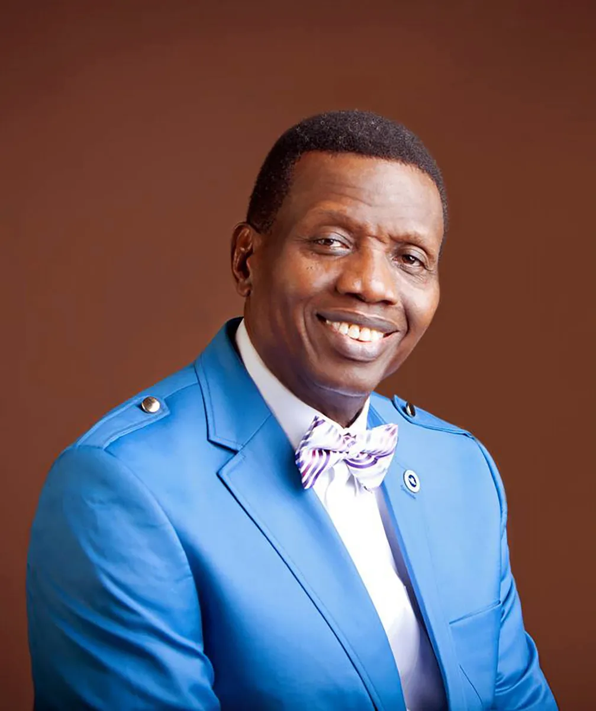

Our Story
Open Heavens Parish is a vibrant congregation of the Redeemed Christian Church of God (RCCG), established to spread the gospel and make disciples in Uyo, Akwa Ibom State. Our journey began with a vision to create a place where people can experience the love of Christ and grow in their faith.
We are committed to excellence in worship, teaching, and service, creating an environment where individuals and families can thrive spiritually and build meaningful relationships within our community.
